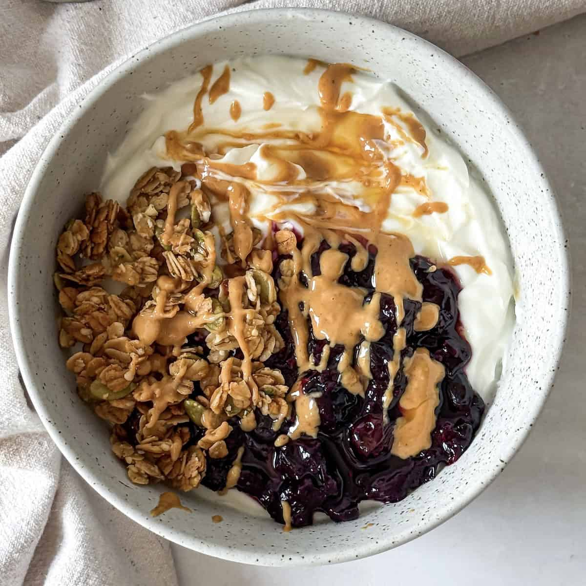

Greek Yogurt
Home

Description
This is one of my favorite ways to make a greek yogurt bowl, and doesn't require too many ingredients. Most can be found at a local grocery store, as it only requires greek yogurt itself, honey, peanut butter, granola, your fruit of choice, and any additional preferred ingredients to customize the bowl to your liking. There is no wait time required, as once you put everything together you can eat it as is.
Ingredients
- Greek Yogurt
- Granola
- Penaut Butter (smooth)
- Fruit (bananas, rasperries, etc)
- Honey
- Dark Chocolate (>80%)
Steps
- Add 2 scoops of greek yogurt to a bowl
- Fill 1/3 of the top of the bowl with your choice of granola
- Add a teaspoon of peanut butter
- Slice bananas in the remaining space (or whatever fruit you chose)
- Break 2 squres of dark chocolate into small pieces and sprinkle on top
- Drizzle honey over everything
- Enjoy!